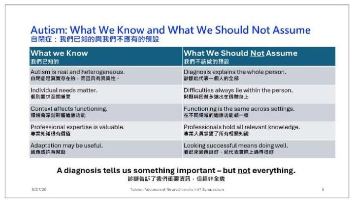
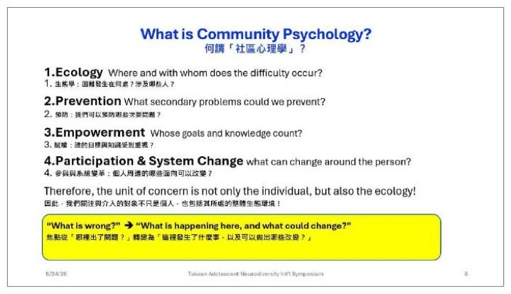
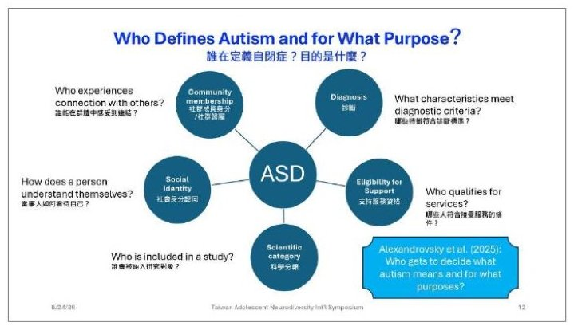
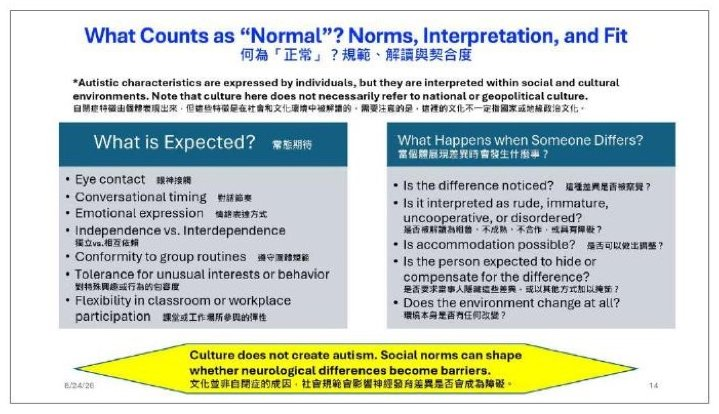
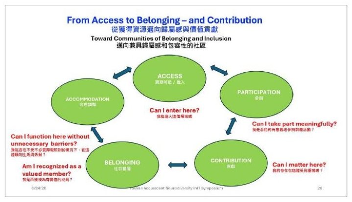

自閉症、神經多樣性與社區歸屬感：社區心理學的視角
Autism, Neurodiversity, and Communities of Belonging: A Community Psychology Perspective
Dr. Toshiaki Sasao 笹尾敏明
日本東京國際基督教大學社區心理學榮譽教授
一個診斷，說明不了一個人；服務到位，也不保證有歸屬感。
笹尾敏明教授以社區心理學（研究人與所處環境如何互相影響的心理學分支）的角度重新看自閉症：診斷只是一部分，環境與社會規範同樣重要。他也把問題帶到台灣——篩檢、健保、早療都是強項，但早療之後，歸屬感從哪裡來？
- 本場提問以現場表單收集，並未安排口頭問答環節。
重點整理
01多一個角度看自閉症

- 笹尾敏明以社區心理學家、而非醫師的身分發言，目的不是取代臨床知識，而是多提供一個觀察角度。
- 他把今天的目的分成三件事：多看見診斷以外的因素、參考當事人的真實經驗、把理解轉換成實際做法。
- 自閉症是真實且有意義的臨床診斷，但一個診斷無法說明一個人的全部。
…none of those facts means that the diagnosis explains the whole person.
本盟譯這些事實，沒有一項能夠說明，一個診斷可以代表這個人的全部。
02把鏡頭拉遠看環境

- 同一個人在不同環境裡的表現可能差很多，那個落差本身就是重要的線索。
- 社區心理學提出四個角度：留意所處環境、提早介入、尊重當事人的目標、一起改變周遭。
- 問題因此從「這個人哪裡出了錯」，換成「這裡發生了什麼、可以改變什麼」。
- 以一名開始拒學的自閉症少年為例：只看個人只看到焦慮敏感，拉遠鏡頭才看得到霸凌、教室與家庭壓力。
03自閉症不是單一樣貌

- 日本一項研究顯示，多數被判定為自閉症的兒童，同時合併其他神經發展狀況，彼此差異很大。
- 「自閉症」這個詞同時被用來做好幾件事：診斷、申請支持服務的資格、研究分類，對某些人也是身分認同的一部分。
- 該問的不是哪個定義才對，而是同一個詞承擔了不同的功能。
…is a meaningful clinical diagnosis, but one diagnosis does not describe one kind of person.
本盟譯這是一項有意義的臨床診斷，但一個診斷，並不能描述同一種人。
04規範、文化與被聽見的聲音

- 怎樣算合宜的眼神接觸、說話節奏、情緒表達，其實都是由社會規範定出來的。
- 本場最直接的一句：文化不會造成自閉症，但社會規範會影響差異會不會被當成一種障礙。
- 日本一項訪談發現，成年後才確診的自閉症者，長年感覺自己不一樣卻不明白原因，也承受著偽裝的代價。
- 溝通如果是關係性的，理解溝通困難也該是關係性的，自閉症者本人該一起參與這個理解的產生。
Culture does not create autism.
本盟譯文化本身不會造成自閉症。
05從服務走向歸屬：台灣呢？

- 神經多樣性不代表完全不需要治療：臨床照護、神經多樣性觀點與社區心理學，三者可以互相補足。
- 台灣在篩檢、健保、特教與早療上已經是強項，但早療之後呢？青少年、就業與社區生活呢？
- 治療與生活上的調整，可以同時並行；好的服務很重要，但服務本身，不保證一個人有歸屬感。
…treatment and accommodation can work together.
本盟譯治療與生活上的調整，可以同時並行。
現場問答
本場提問以現場表單收集，並未安排口頭問答環節。
帶走的一句
Not treatment without dignity. Not acceptance without needed support.
本盟譯不做沒有尊嚴的治療；不做沒有必要支持的接納。